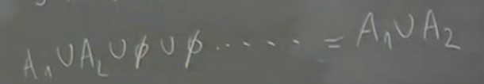
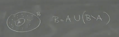

2025-02-18 13:22
Status: revisione_finita riscritto_finito flashcard_finite
Tags: sbobine probabilità
lez01’- Prob
Introduzione alla Probabilità e Teoria della Misura
Il professore introduce il concetto di probabilità, sottolineando come essa si applichi a fenomeni non descrivibili con leggi deterministiche. La probabilità, in sostanza, misura l’incertezza. L’approccio matematico moderno alla probabilità si basa sulla teoria della misura.
Concetti Chiave: Algebre, Misure, Misure di Probabilità (o probabilità)
Gli argomenti principali della lezione sono algebre, σ-algebre, misure e misure di probabilità. È importante, secondo il professore, fare tabula rasa delle concezioni elementari di probabilità per poter ricostruire i concetti in modo più rigoroso. L’astrazione è necessaria per inglobare sia il discreto che il continuo in un unico linguaggio matematico.
Misura: Definizione Intuitiva
Intuitivamente, una misura associa un valore a un insieme. Questo valore può rappresentare un’area, una lunghezza, un peso o un’incertezza.

Proprietà Fondamentale
Se si misurano due insiemi disgiunti A₁ e A₂ separatamente, la somma delle loro misure deve essere uguale alla misura della loro unione:
μ(A₁ ∪ A₂) = μ(A₁) + μ(A₂) se A₁ ∩ A₂ = ∅
Spazio Campionario (Ω)
-
Ω (Omega): Spazio Campionario (o Spazio degli Esiti):
- L’insieme di tutti i possibili risultati di un esperimento casuale.
- Insieme astratto, senza struttura particolare.
- Può essere finito, infinito numerabile, o continuo.
- Spesso non è esplicitamente definito, ma esiste implicitamente.
-
**ω (omega minuscola):
- Esito Elementare**: Un singolo elemento di Ω, un punto, una particolare realizzazione dell’esperimento.( Parametrizzazione del caso).
-
Eventi A: Sottoinsiemi di Ω A⊂Ω.
- Collezione di esiti elementari che soddisfano una condizione.
-
Evento Certo: L’insieme Ω stesso.
Esempi di Spazi Campionari:
- Insieme finito di punti: Ω = {1, 2, 3, …, 10}
- Numeri naturali non negativi: Ω = {0, 1, 2, …}
- Numeri reali: Ω = ℝ
- Spazio euclideo: Ω = ℝᵈ (vettori con componenti reali)
- Successioni: Ω = {x = (x₁, x₂, …): xᵢ ∈ {1, 2, …, m}}
Sottoinsiemi e Operazioni Insiemistiche
I sottoinsiemi di Ω rappresentano eventi. È fondamentale non confondere un punto (ω ∈ Ω) con un sottoinsieme.
Operazioni Fondamentali:
- Complementare: Aᶜ = {ω ∈ Ω: ω ∉ A} (tutti gli elementi di Ω che non appartengono ad A).
- È essenziale specificare l’insieme universo (Ω) quando si considera il complementare.
Algebre di Insiemi
Una classe (o famiglia) di sottoinsiemi di Ω si dice algebra se soddisfa le seguenti proprietà:
- Ω ∈ (l’insieme totale appartiene all’algebra).
- Se A ∈ , allora Aᶜ ∈ (se un insieme appartiene all’algebra, anche il suo complementare appartiene all’algebra).
- Se A₁, A₂ ∈ , allora A₁ ∪ A₂ ∈ (se due insiemi appartengono all’algebra, anche la loro unione appartiene all’algebra).
Proprietà Derivata
Se A è un’algebra e A₁, …, Aₙ ∈ A, allora ∪ᵢ₌₁ⁿ Aᵢ ∈ (l’unione finita di insiemi appartenenti all’algebra appartiene all’algebra). Questo si dimostra per induzione.
Sigma-Algebre (σ-algebre)
Una σ-algebra è un’algebra che è anche stabile rispetto a unioni numerabili. Formalmente, una classe di insiemi è una σ-algebra se soddisfa:
- Ω ∈
- Se A ∈ , allora Aᶜ ∈
- Se Aᵢ ∈ per i = 1, 2, …, allora ∪ᵢ₌₁^∞ Aᵢ ∈ (l’unione numerabile di insiemi appartenenti alla σ-algebra appartiene alla σ-algebra).
Conseguenze Importanti:
- Se è una σ-algebra, allora ∅ ∈ (l’insieme vuoto appartiene alla σ-algebra). ^em0xcw
 1. e 2. implicano che ma con
1. e 2. implicano che ma con
- Se è una σ-algebra, allora è anche un’algebra.
- La stabilità rispetto a unioni numerabili implica la stabilità rispetto a unioni finite, ma non viceversa.
- 
Osservazione sulle Notazioni
Il professore userà la lettera per denotare una σ-algebra. In alcuni testi, si usa la lettera per indicare sia le algebre che le σ-algebre.
Insieme delle Parti
L’insieme delle parti (Ω) è l’insieme di tutti i sottoinsiemi di Ω. (Ω) è sempre una σ-algebra.
Caso Finito
Se Ω è un insieme finito, allora non c’è differenza tra algebra e σ-algebra. In questo caso, l’insieme delle parti (Ω) è finito, e quindi ogni famiglia di sottoinsiemi è finita.
Misure
Una misura è una funzione che associa un valore numerico a un insieme, quantificandone la “dimensione” in un certo senso.
Spazio Misurabile
Una coppia (Ω, ) o (Ω, ), dove Ω è uno spazio campionario e è un’algebra ( è una σ-algebra) su Ω, è chiamata spazio misurabile.
Misura Finitamente Additiva
Una funzione μ: → [0, +∞] è una misura finitamente additiva se soddisfa le seguenti proprietà:
- μ(∅) = 0
- Per ogni A₁, A₂ ∈ tali che A₁ ∩ A₂ = ∅, si ha μ(A₁ ∪ A₂) = μ(A₁) + μ(A₂)
- definire un algebra è servito a questo
- NOTA: μ non è una misura di un punto , ma di una famiglia di sottoinsiemi.
Misura (σ-additiva o completamente additiva)
Una funzione μ: → [0, +∞] è una misura (σ-additiva) se soddisfa le seguenti proprietà:
-
μ(∅) = 0
-
Se Aᵢ ∈ per i = 1, 2, … e Aᵢ ∩ Aⱼ = ∅ per ogni i ≠ j, allora:
μ(∪ᵢ₌₁^∞ Aᵢ) = ∑ᵢ₌₁^∞ μ(Aᵢ) -.
- se vale più infinito la somma, la misura sarà infinito
Terminologia
- Eventi: I sottoinsiemi di Ω sono spesso chiamati eventi.
- Evento certo: Ω (l’evento che si verifica sempre)
- Evento impossibile: ∅ (l’evento che non si verifica mai)
- Evento contrario: Aᶜ (il complementare di A)
Misure di Probabilità
Una misura di probabilità è una misura che associa a ogni evento un numero compreso tra 0 e 1, rappresentando la probabilità che l’evento si verifichi.
Probabilità Finitamente Additiva
Una funzione : A → è una probabilità finitamente additiva se soddisfa:
- P(∅) = 0 e P(Ω) = 1
- Per ogni A₁, A₂ ∈ tali che A₁ ∩ A₂ = ∅, si ha P(A₁ ∪ A₂) = P(A₁) + P(A₂)
Misura di Probabilità (σ-additiva)
Una funzione P: → è una misura di probabilità (σ-additiva) se soddisfa:
-
P(∅) = 0 e P(Ω) = 1
-
Se Aᵢ ∈ per i = 1, 2, … e Aᵢ ∩ Aⱼ = ∅ per ogni i ≠ j, allora:
Relazione tra Misure e Misure di Probabilità
Una misura di probabilità è un caso particolare di misura in cui i valori sono normalizzati tra 0 e 1 e la misura dello spazio totale è 1.
- definizione probabilità: è una misura sigma additiva tale per cui lo spazio totale vale omega
Proprietà Elementari delle Misure (e Misure di Probabilità)
Le seguenti proprietà valgono sia per le misure che per le misure di probabilità (nell’accezione di σ-additiva):
- Se A₁ ∩ A₂ = ∅, allora μ(A₁ ∪ A₂) = μ(A₁) + μ(A₂)
- questa proprietà appartiene alle unioni numerabili (σ- finite) si può dedurre valga anche per le σ-additive
- Se A ⊆ B, allora μ(A) ≤ μ(B) (monotonia)
- Se A ⊆ B significa B implica A
Terminologia Probabilistica Aggiuntiva
- Se A ∩ B = ∅, si dice che A e B sono incompatibili.
Misure di Probabilità: Proprietà Fondamentali e Dimostrazioni
se P è una mdp (misura di probabilità) → P è una misura le proprietà sulle misure valgono per P.
Il professore spiega le proprietà fondamentali delle misure di probabilità, sottolineando che queste proprietà sono valide in generale per le misure su sigma-algebre e sono cruciali per la teoria della probabilità.
1. Additività Completa e Finitamente Additiva (il cambio da P a un mu è colpa del prof…)
-
Definizione: Una misura di probabilità (P) su uno spazio campionario (\Omega) è completamente additiva se, per ogni successione di eventi mutuamente disgiunti , vale:
-
Additività finita: Se la proprietà vale solo per un numero finito di eventi disgiunti, allora la misura è finitamente additiva.
-
Dimostrazione che l’additività completa implica quella finita:
-
Siano e eventi disgiunti. Possiamo scrivere la loro unione come un’unione infinita, aggiungendo l’insieme vuoto infinite volte:
-
Per l’additività completa:
-
Dato che :
-
Questo dimostra che se una misura è completamente additiva, allora è anche finitamente additiva.
-
2. Monotonia
- Definizione: Se (), allora ().
- Dimostrazione:
-
Se , possiamo scrivere B come l’unione disgiunta di A e :
- 
-
Quindi,
-
per additività finita.
-
Dato che per definizione allora:
-
3. Probabilità del Complementare
- Definizione sia
- : ()
- dove () è il complementare di () rispetto a ().
- : ()
- Dimostrazione:
- Sappiamo che () e ().
- Quindi, per additività finita
- ().
- Da cui:
4. Probabilità dell’Unione di Due Eventi

- Definizione: sia
- Per due eventi () e (), vale:
- Dimostrazione:
-
Si decompone () in tre parti disgiunte: (), () e ().
-
Quindi per additività finita:
-
Notiamo che
- , che sono disgiunti
- , che sono disgiunti
-
Analogamente:
-
Sostituendo:
-
Semplificando:
-
Il professore sottolinea che sommare () e () significa contare due volte l’intersezione, quindi la si deve sottrarre.
-
Sigma-algebra Generata da una Famiglia di Insiemi
- Definizione: Data una famiglia di sottoinsiemi () di (),
- la sigma-algebra generata da (), indicata con (), è la più piccola sigma-algebra che contiene ().
- Esempio:
- Sia () e (). () non è un’algebra perché non contiene () né l’insieme vuoto.
- Per generare la sigma-algebra, dobbiamo aggiungere:
- .
- Il complementare di (), che è ().
- Il complementare di (), che è ().
- {1,3} che è il complementare di {2}
- {2} che è il complementare di {1,3}
- L’insieme vuoto
- Quindi, (), che è l’insieme delle parti di ().
- Esercizio Proposto
- Esercizio: Dato () e (), trovare la sigma-algebra generata da ().
- Osservazione: In questo caso, la sigma-algebra generata non sarà l’insieme delle parti, suggerendo che non sempre si è in grado di misurare tutti i sottoinsiemi dello spazio campionario. References